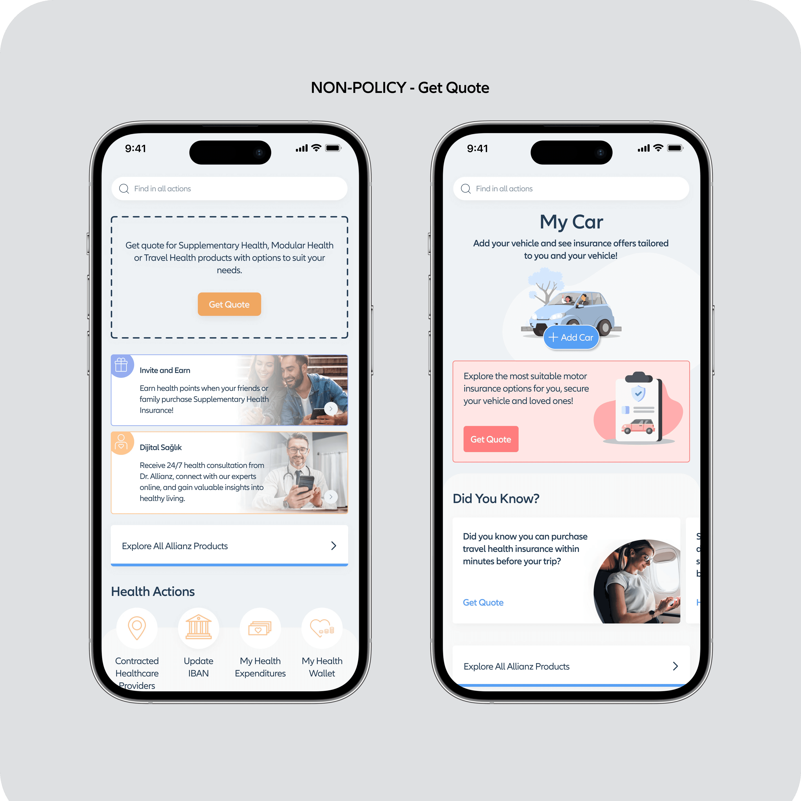

Allianz Türkiye: High-Scale B2C Ecosystem
Leading cross-squad product design strategy, an 8,923-respondent discovery engine, and omnichannel journey architecture to drive $24M+ in written premium impact and reduce call center load for Turkey’s largest private insurer.

01. 5 Cross-Functional Squads Orchestration
Allianz Türkiye is the leading private insurance and pension provider in Turkey. Partnering through ting (Istanbul & London), I served as Lead Product Designer and Experience Architect embedded within Allianz’s in-house product organization. Rather than operating as an isolated visual agency, our 4-person design unit integrated directly across 5 simultaneous agile squads to govern end-to-end B2C experience logic.
The operational challenge was structural: each product vertical was run by separate department heads and product owners with competing backend and efficiency priorities. Without architectural governance, the mobile app risked fragmenting into 5 disconnected sub-applications. I established shared interaction primitives, synchronized customer journeys, and cross-vertical design standards that scaled across 100+ production releases.
| Squad Vertical | Department Scope | Primary Customer Flow | Operational & Business Metric |
|---|---|---|---|
| Health Squad | Outpatient, Inpatient, Pharmacy | Contracted hospital discovery, dynamic limits, claim reimbursement | 5.4M Limit Queries · -20% Call Inquiries |
| Pension (BES) Squad | Mutual Funds, Wealth Management | Fund rebalancing, risk profiling, 30% government match | 515K+ Digital Fund Transactions |
| Motor & Life Squad | Auto, Casco, Personal Life | Policy renewals, fast roadside dispatch, digital claims status | +34% In-App Policy Renewal Conversion |
| Non-Life Squad | Property, Home, Earthquake (DASK) | Self-service policy issuance, automated property renewal | $24M+ Written Premium Production |
| Value-Added Services | Allianz 365 Club, Wellness | Preventive health check-ups, lifestyle perks, telemedicine | Daily Engagement & Retention Hook |
02. The 8,923-Respondent Discovery Engine
Private Pension (BES) represents a cornerstone of Allianz’s long-term asset accumulation. However, initial funnel analytics exposed a critical bottleneck: over 72% of policyholders abandoned digital fund rebalancing within the first 60 seconds. To diagnose the behavioral breakdown, I directed a dual-track research methodology combining quantitative survey data from 8,923 policyholders with qualitative cognitive walkthroughs.
“Users did not avoid fund distribution changes because of disinterest; they avoided it out of acute financial anxiety. Presenting raw mutual fund tables with actuarial jargon (volatility ratios, Sharpe indices, duration tables) paralyzed users into fearing an irreversible loss of their lifelong retirement savings.”
To resolve this anxiety, I restructured the wealth management interface from a financial spreadsheet into a decision-guided advisory engine:
- Cognitive Risk Sliders: Replaced complex percentage distribution inputs with intuitive risk-appetite sliders linked to automated robo-advisory portfolios.
- 30% Government Match Visualizer: Clearly segregated personal deposits from the 30% state contribution (Devlet Katkısı), demonstrating guaranteed baseline yield.
- Comparative Return Benchmarks: Introduced visual return metrics comparing the user's current portfolio directly against inflation, USD, gold, and time-deposit benchmarks.
03. Health Coverage Diagnostic: 5.4M Queries
In private health insurance, customer uncertainty directly drives operational expenditure. Inbound call center logs showed that the vast majority of calls occurred minutes before doctor visits: policyholders asking: "Is this hospital included in my network? How many outpatient visits do I have left this year?"
I architected the Health Limits & Contracted Network Infrastructure to provide instant, self-service certainty:
- Real-Time Outpatient Limit Progress Bars: Replaced vague policy clauses with instant visual progress meters showing used vs. remaining doctor visits and prescription quotas.
- Geo-Located Network Directory: Single-tap location filtering for contracted hospitals, diagnostic clinics, and pharmacies, explicitly tagged with insurance tier compatibility (Supplementary Sağlık, Modular, Comprehensive).
- Asynchronous Reimbursement Claims: Built an in-app claims ledger for non-contracted medical expenditures, enabling receipt capture and real-time status tracking (Approved, Under Evaluation, Missing Documents).

04. Omnichannel Journey Architecture: Mobile, Branch & Telesales
Allianz insurance products are distributed through three traditionally siloed channels: bank branch advisors (Yapı Kredi, Garanti BBVA), telesales representatives, and the digital mobile application. In the legacy workflow, customer interactions were disconnected: branch contracts sat on static paper, while incomplete mobile quote requests resulted in dead leads.
I designed an integrated Omnichannel State Synchronization Model:
| Touchpoint | Legacy Channel Disconnect | Unified Architectural Solution |
|---|---|---|
| Bank Branch | Advisor initiates contract; customer receives static paper terms with zero digital follow-up. | Instant SMS Push Onboarding: Customer receives a real-time checklist inside the Allianz’ım mobile app upon branch sign-off. |
| Mobile App | Fund reallocations and policy changes made on mobile were invisible to the branch advisor CRM. | Bidirectional State Sync: Advisor CRM updates in real time with mobile portfolio actions, unlocking proactive advisory touchpoints. |
| Telesales | Support agents had zero context on abandoned digital quote calculations. | Contextual Drop-Off Handoff: Calculation state tags pass directly to telesales for targeted assisted completion without repeated questions. |

05. Value-Added Services & Preventative Engagement
A systemic challenge in insurance is the "grudge purchase" mental model: users only open the application during an accident, illness, or claim. To drive organic engagement and elevate customer lifetime value (LTV), our squad architected the Allianz 365 Club Ecosystem.
- Tiered Privilege Architecture: Established tiered membership levels (Bronze, Silver, Gold, Platinum) automatically computed from policy tenure and total accumulated savings.
- Integrated Telemedicine (Dr. Allianz): Seamless 24/7 video and chat consultations with medical specialists directly within the mobile application.
- Preventative Health & Lifestyle Integration: Automated scheduling for annual health check-ups, dental cleanings, pet care, and daily mobility partnerships (İspark, EspressoLab).

06. Measurable Business Outcomes & Scale
The transformation of Allianz’ım established a verified benchmark for high-scale European B2C insurtech, proving that rigorous product design architecture directly fuels core business economics: